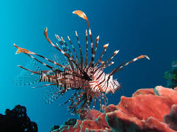

Featured Project
This website was developed using React and Bootstrap (JavaScript, HTML, and CSS) after completing a front-end development course on Udemy. It highlights my technical and design capabilities while integrating the professional experience I gained as a 12-month Digital Transformation Coordinator Co-op student at Sun Life. The project demonstrates my ability to build responsive, user-focused web interfaces and showcase real-world co-op achievements through clean and intuitive UI design.

A desktop application built with Java that allows users to create, organize, and track their daily tasks. It features a clean graphical interface with options to add, edit, and delete tasks, as well as automatically reorder completed items to keep the workspace focused.

A deep-learning project completed for CP468 (Artificial Intelligence), leveraging VGG19 and Xception models to detect lionfish in underwater imagery. The system includes a Gradio interface for real-time interaction.

A professional website for Sunnah Circle Institute—a non-profit focused on Islamic education. Features include registration forms, course listings, and community engagement tools. Built collaboratively with the organization to ensure alignment with their mission and branding.

A simple C-language implementation of Tic Tac Toe on a 3×3 board. Built using arrays, loops, and conditional logic to manage player input and determine win conditions.

A responsive calculator web app that performs basic arithmetic operations. Designed with HTML, CSS, and JavaScript, featuring a modern layout and interactive button feedback.

A Python program that creates random, secure passwords of customizable length and complexity. Ideal for generating strong credentials for accounts and applications.